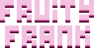
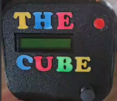

Hi, I'm Kevin, a 23-year-old student at the Amsterdam University of Applied Sciences. I'm currently in my third year of the HBO-ICT study. I have a passion for embedded systems and have been programming for over 3 years now. I have experience with Python, C++, C#, Unity, HTML, CSS, and JavaScript. I'm always looking for new challenges and opportunities to learn and grow as a developer.
For the second project in the first year of HBO-ICT, the goal was to recreate a classic arcade game, but with a clear twist. Fruity Frank is a spinoff of the classic Mario/Donkey Kong game, but with a twist. Instead of having to walk up the platforms to save the princess, you are on top of the platforms and have to throw fruits at incoming enemies to protect your fruit bowl.
This was my first project in Unity. The goal of the project was to create a game in Unity that is playable in the browser. We were not allowed to use the inspector to change values, so everything had to be done in code. Last Stand is a bullet hell game where you have to survive as long as possible against incoming projectiles. This game only uses primitive shapes for the enemies and the player.
In the last semester of my second year, I followed a minor called Internet of Things. I learned all about microcontrollers, sensors, and how to program them. The Cube was a project for the individual assignment of the minor. It's a small handheld game device that closely resembles "Bop-It!".
A-Moebe is a project that was not made for school, but for a friend who started his business building escape rooms. This is an all-in-one system that can be used to control the escape room. It has a timer, a hint system, a way to control the lights and sounds in the room, turn magnetic locks on and off, read sensor data in real time, and do this all dynamically.
Due to school restrictions, I cannot share the GitLab repository of the projects made specifically for school.